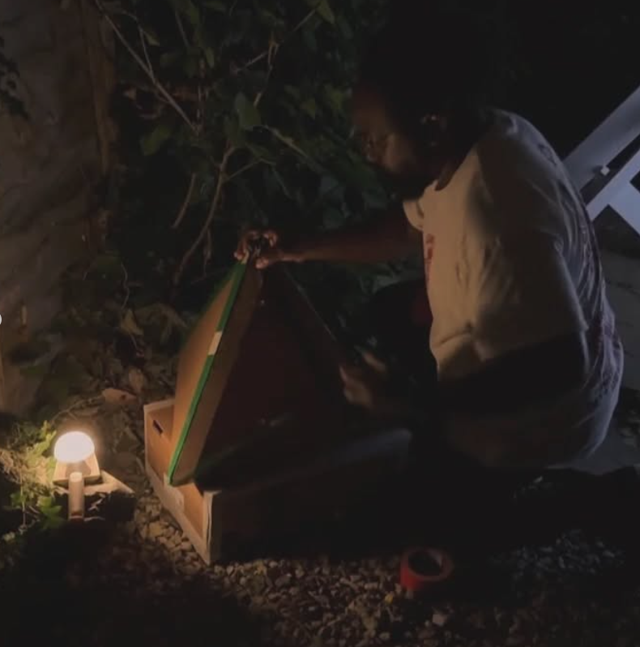
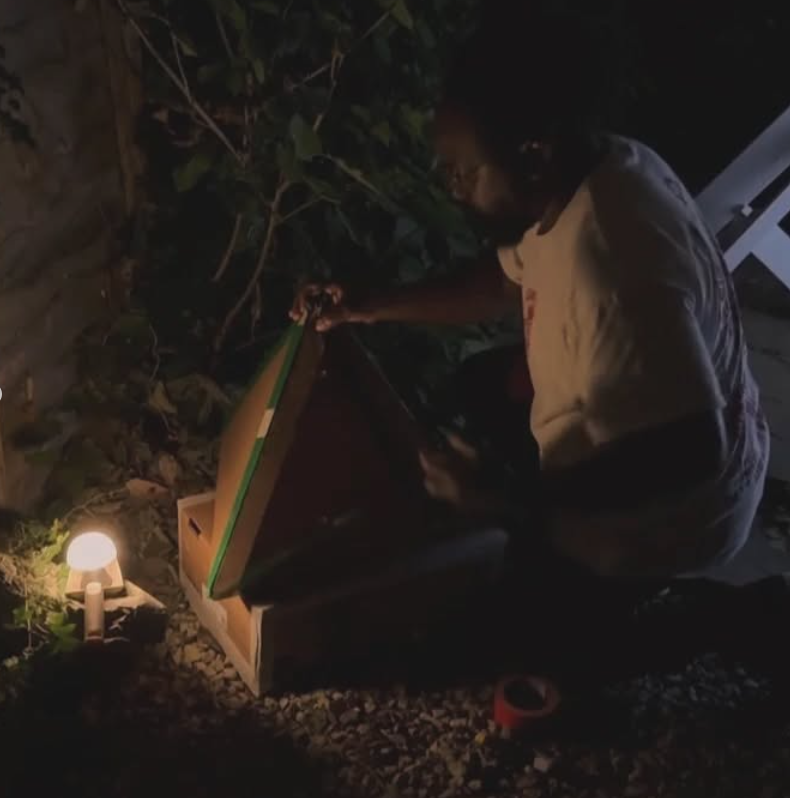

Pragmata Collective
2021 – ongoing

 

Image 1: Emily Rosamond, 2025. Photo: Tinatin of Floor to Sky
Image 2: Summer Show 2025 Photo: Tinatin of Floor to Sky
Image 3: Shepherd Manyika performance, 2024
Pragmata Collective is a micro-institution founded by artists Adele Lazzeri and Toby Tobias Kidd. The project stages experimental art events, exhibitions, and interventions that often combine installation, performance, music, and forms of informal public gathering.
Since 2020, Pragmata has organised an annual summer exhibition programme hosted in a domestic garden setting, now entering its fifth year. These events operate at the intersection of private and public space, testing how exhibition-making, community, and artistic exchange can be sustained outside formal institutional frameworks. Alongside this ongoing programme, Pragmata has presented projects at venues including Markfield Festival, The Old Nunnery, and Graphik Gallery.
Past contributors include: Paola Estrella, Yukaka Tanaka, Arieh Frosh, Serena Huang, Mark Applegate, Sadie Edginton, Shepherd Manyika, Shira Bar, Janette Parris, Emily Rosamond, Paula Smolarska, David Thorp, Xenia Busalova, Emma Edmonson, Kaori Homma, Malgorzata Lisiecka, Nao Matsunaga.
Back to Selected Work